Send Notification upon Event Conditions
This topic describes the procedure to send notification triggered by event conditions in the Notification Wizard.
Prerequisites
- System Manager is in Engineering mode.
- System Browser is in Application View.
Complete the following procedures:
1 – Select the Message Type
Select the desired medium to send the notification as instructed below. For example, Via Email, Via SMS and Via Pager device.
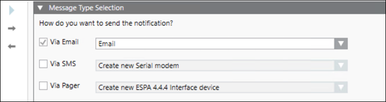
- Click the Via Email checkbox for sending notification through Email. This is the default selection. Do one of the following:
- If you select Create new SMTP email server and click Next page
 . The wizard displays Step 2. Go to Configure the Email Setting step.
. The wizard displays Step 2. Go to Configure the Email Setting step. - If you select any existing server and click Next page . The wizard displays Step 6. Go to Trigger Rule Configuration step.
- (Optional) Click the Via SMS checkbox for sending notification through SMS.
Do one of the following: - If you select Create new Serial modem or Create new IP modem (Available for RENO and RENO Plus license users) and click Next page . The wizard displays Step 3 or Step 4 respectively. Go to Configure the Serial Modem Setting or Configure the IP Modem Setting step.
- If you select any existing modem and click Next page . The wizard displays Step 6. Go to Trigger Rule Configuration step.
- (Optional) Click the Via Pager checkbox for sending notification through pager.
Do one of the following: - If you select Create new ESPA 4.4.4 Interface device and click Next page . The wizard displays Step 5. Go to Configure the Pager Setting step.
- If you select any existing pager and click Next page . The wizard displays Step 6. Go to Trigger Rule Configuration step.
2 – Configure the Email Settings
To set the SMTP email settings, do the following:
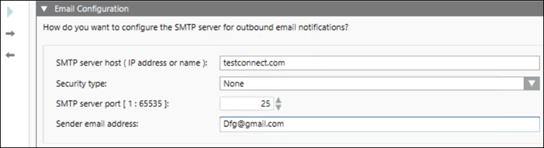
- Enter the host configuration in the SMTP server host (IP address or name) field.
- Select TLS, SSL or None in the Security type drop-down list.
- Enter a value in the SMTP server port [1: 65535] field. The value should be in the provided range from 1 to 65535. The port number for SSL, TLS and None is 465, 587 and 25 respectively.
- Enter Login ID in the Login Id field.
NOTE: This field appears only when TLS and SSL is enabled. - Enter your password in the Password field.
NOTE: This field appears only when TLS and SSL is enabled. - Enter the sender’s email address in the Sender email address field.
- Click Next page .
3 – Configure the Serial Modem Setting
- In the Device Configuration section, do the following:
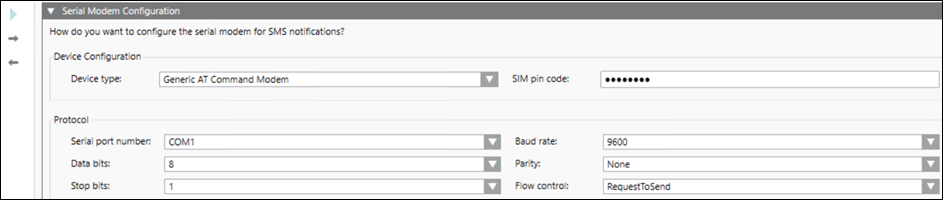
- Select the desired device from the Device type drop-down list.
- (Optional) Enter the SIM pin value in the SIM pin code field.
- In the Protocol section, do the following:
- Select the desired COM port from the Serial port number drop-down list.
- Select the number of Data bits the device is using to communicate serially from the drop-down list.
- Select the number of Stop bits the device serial protocol is using from the drop-down list.
- Select a value from the Baud rate drop-down list.
- Select the desired option from the Parity drop-down list.
- Select the type of Flow control mechanism to be used from the drop-down list.
- Click Next page .
4 – Configure the IP Modem Settings
This option is available for RENO and RENO Plus license users.
- In the Device Configuration section, do the following:
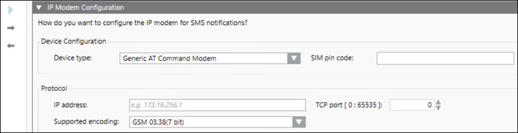
- Select the desired device from the Device type drop-down list.
- (Optional) Enter the SIM pin value in the SIM pin code field.
- In the Protocol section, do the following:
- Enter the IP address.
- Select the option from the Support encoding drop-down list.
- Enter the value in the TCP port field.
- Click Next page .
5 – Configure the Pager Settings
- In the ESPA 4.4.4 Interface Protocol section, do the following:
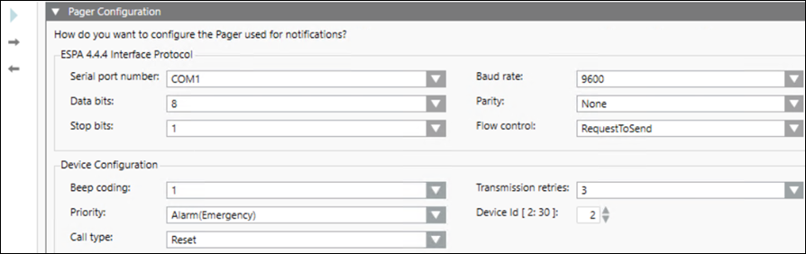
- Select the desired COM port from the Serial port number drop-down list.
- Select the number of Data bits the device is using to communicate serially from the drop-down list.
- Select the number of Stop bits the device serial protocol is using from the drop-down list.
- Select a value from the Baud rate drop-down list.
- Select the desired option from the Parity drop-down list.
- Select the type of Flow control mechanism to be used from the drop-down list.
- In the Device Configuration section, do the following:
- Select a value from the Beep coding drop-down list.
- Select the desired option from the Priority drop-down list.
- Select the desired option from the Call type drop-down list.
- Select the number of Transmission retries from the drop-down list.
- Enter a value in the Device Id [2:30] field. The entered value should be in the provided range from 2 to 30.
- Click Next page .
6 – Trigger Rule Configuration
Select the event category and cause for the notification as instructed below.
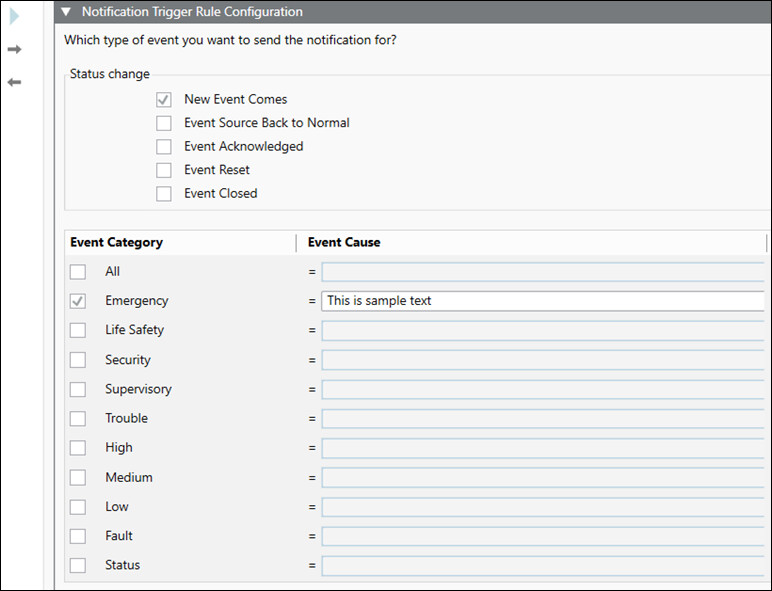
- Select the desired option from the Status change section. The default selection is New Event Comes.
- Select the required Event Category checkbox. You can select one or multiple event categories.
- Enter the cause in the Event Category field against the selected event category.
NOTE: The list of Event Categories is retrieved from the client profile. - Click Next page .
- Select the Any point in system option. This is the default selection.
- Select the Only for this item option and follow the below steps:
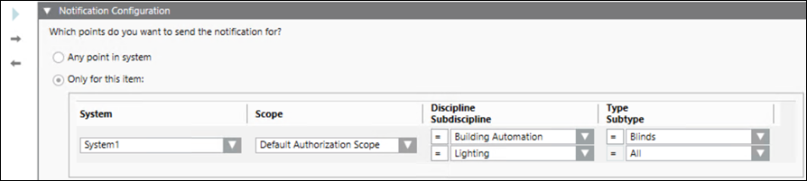
- Select an online system from the displayed list in the System drop-down list.
- Select the available scope from the Scope drop-down list.
- Select the discipline and sub discipline of the event source from the Discipline and Subdiscipline drop-down list.
- Select the object type and sub object type of the event source from the Type and Subtype drop-down list.
- Click Next page .
7 – Set the Time and Organization Mode
- Select the desired time zone from the Time zone drop-down list.
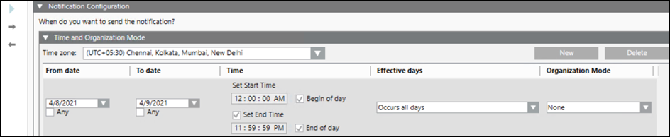
- To add a new row, click New.
- To remove a row, select it and click Delete.
- Specify the date and time when you want to send the notification.
- Click Next page .
8 – Configure the Message Template
- Select the desired language from the Language drop-down list. All languages is the default selection.
NOTE: The default text is provided for Email subject, Email body and SMS/Pager text when you select the All languages option. - Enter the subject line in the Email subject field. The maximum subject line length is 160 characters.
- Enter the email text in the Email body field. The maximum body text length is 100000 characters.
NOTE: The default Long text length is 50000 characters. - Enter the text for SMS in the SMS/Pager text field. The maximum body text length is 160 characters.
Refer to the Content Editor section in Message Editor Tab topic for more information on configuring the message template. 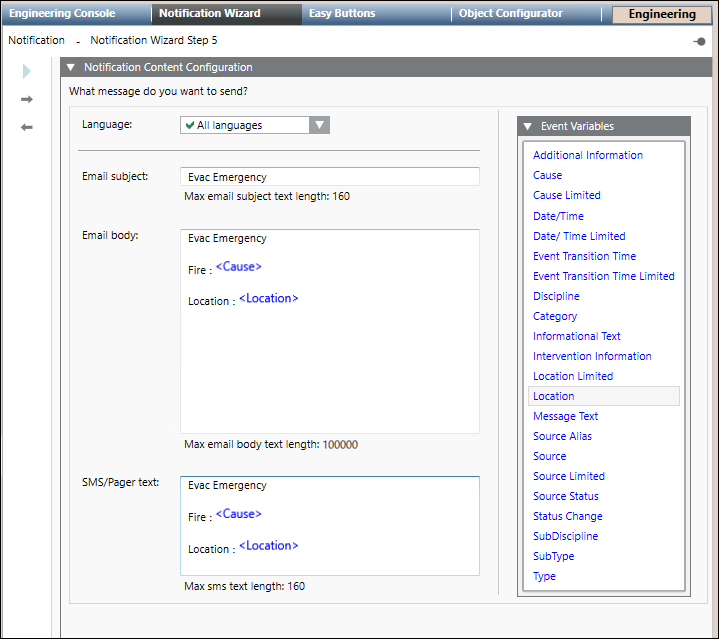
- Click Next page .
9 – Configure the Recipients
- Click
 and select the user, depending on your specific search.
and select the user, depending on your specific search. - Enter a keyword in the Search field to search a specific recipient.
- Select the recipients to whom you want to send the notification, and click
 to move the selected recipients to the Notification recipients section on the right.
to move the selected recipients to the Notification recipients section on the right.
NOTE: You can configure new recipients using the Recipients Editor button. Refer to the Recipients topic for more information on adding recipients. 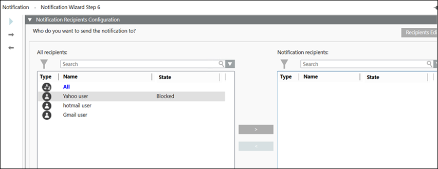
- Click Next page .
10 – Configure the Template General Settings
- Enter the template name in the Notification template name field. This becomes the display name.
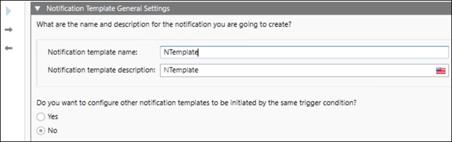
- Enter a description of the template in the Notification template description field.
- Select the Yes or No option to initiate other templates using the same trigger. The default selection is No.
NOTE: If you select Yes, the Notification Wizard is directed to Step 8 (Configure the Message Template). You can then configure the message template, recipients and name for the new notification template. - Click Next page .
11 – Device Summary Information
This step is visible only when you are creating new devices.
- Review the device information for accuracy. If you need to modify any of it, click Previous page
 until you arrive at the location where you need to modify information, and then resume your Notification Wizard steps until you are satisfied with the configuration.
until you arrive at the location where you need to modify information, and then resume your Notification Wizard steps until you are satisfied with the configuration. 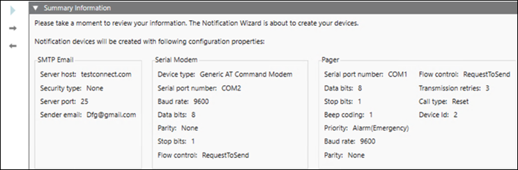
- Click Next page .
12 – Notification Summary Information
- Review the information for accuracy. If you need to modify any of it, click Previous page until you arrive at the location where you need to modify information, and then resume your Notification Wizard steps until you are satisfied with the configuration.
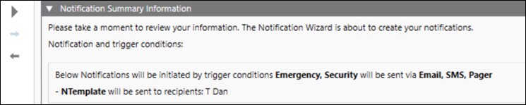
- Click Run Configuration
 .
. - Click Yes.
- The entered configurations are created in their respective nodes in the System Browser.